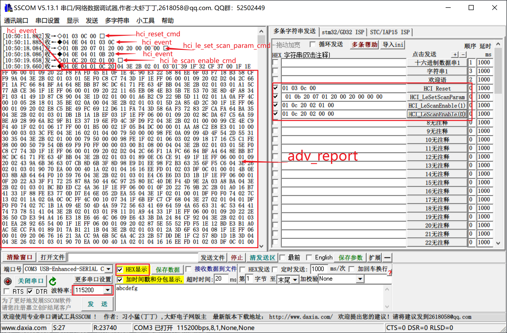

BLE HCI¶
1 功能概述¶
ble_hci 例程演示了如何通过 HCI 接口和磐启 BLE Controller 通讯。该工程适合BLE跑在多SOC的应用场景，例如BLE Host 跑在一个高性能的 SOC 上，BLE Controller 跑在磐启 MCU 上。
ble_hci 支持 HCI H4 协议
2 环境要求¶
board:
pan107x evbuart0: 用来显示串口log（波特率921600，选项
8n1）串口调试助手： 用于发送和接收 HCI 协议数据， 或者其他支持 HCI 协议的工具都可以
4 配置说明¶
ble_hci工程 使用了硬件UART1，UART1默认配置如下
baudrate: 115200bps
TX pin: P12
RX pin: P24
CTS pin: P02
RTS pin: P11
默认情况下 UART 流控是使能的，用户可以到工程的 sdk_config.h 中配置使能或者失能 UART 流控。其他的配置如baudrate，BLE controller参数，log 等都可以到 sdk_config.h 中找到配置选项
5 演示说明¶
编译工程，烧录固件，设备上电，会输出log。
打开串口调试助手，连接HCI UART，以 Hex 格式发送 HCI 协议数据，我们以启动 ble scan 为例来演示 ble_hci工程的使用
涉及到的 HCI cmd 如下(其他HCI 协议包可以参看bluetooth spec)：
(1) HCI Reset: 01 03 0c 00 (2) HCI_LeSetScanParam: 01 0b 20 07 01 20 00 20 00 00 00 (3) HCI_LeScanEnable(1): 01 0c 20 02 01 00 (4) HCI_LeScanEnable(0): 01 0c 20 02 00 00
依次点击下图中的发送button，发送相应的HCI cmd，HCI cmd发送到 ble controller 后，ble controller 会回复相应的 HCI Event。
当”HCI_LeScanEnable(1)” 命令发送以后，ble controller 将启动 ble scan，并将 scan 到的 adv 数据上报给Host(这里的host就是串口调试助手)。
当”HCI_LeScanEnable(0)” 命令发送以后，ble controller将退出 ble scan， 不会有adv 数据上报。
测试效果如下：

HCI 数据交互¶